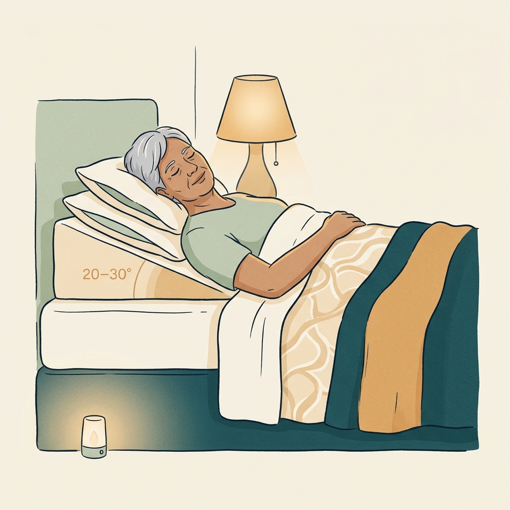
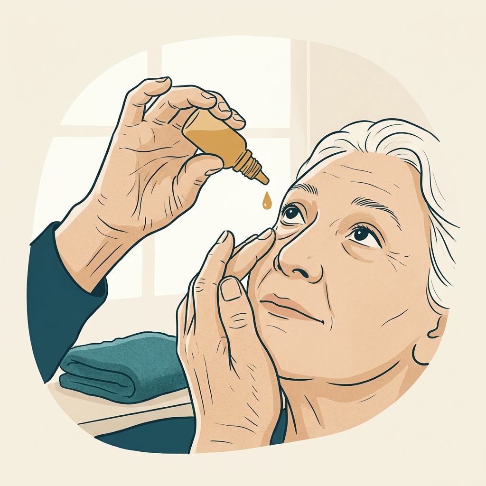
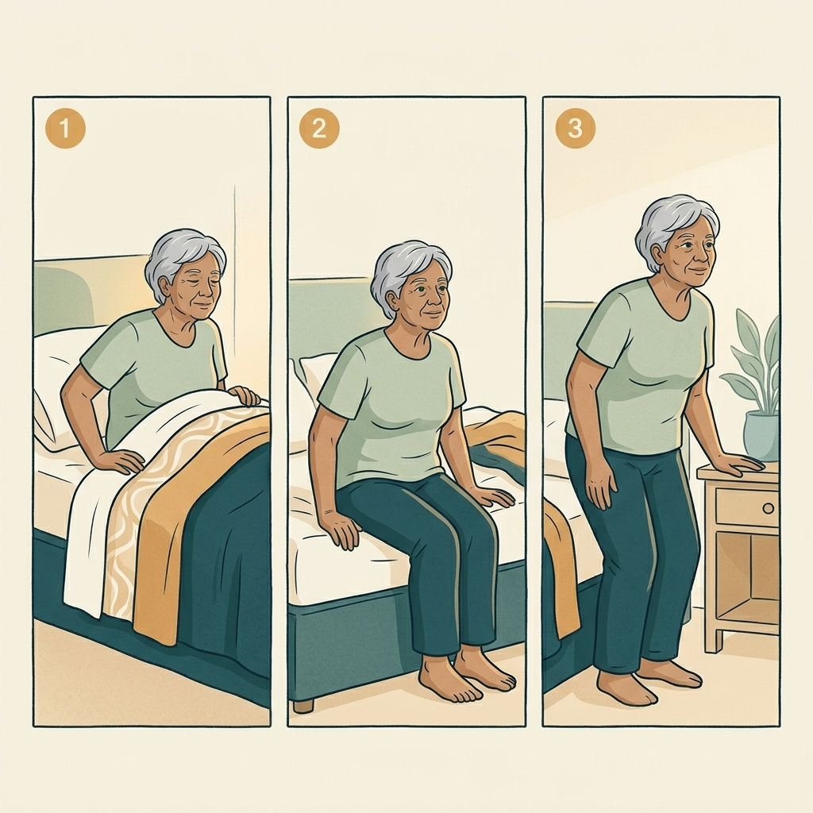
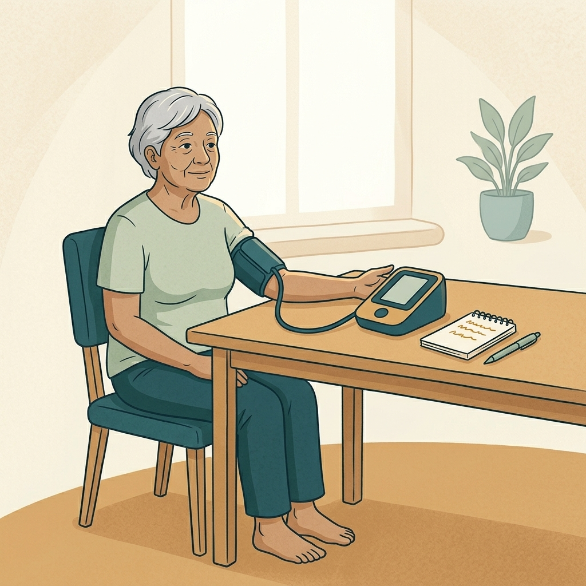
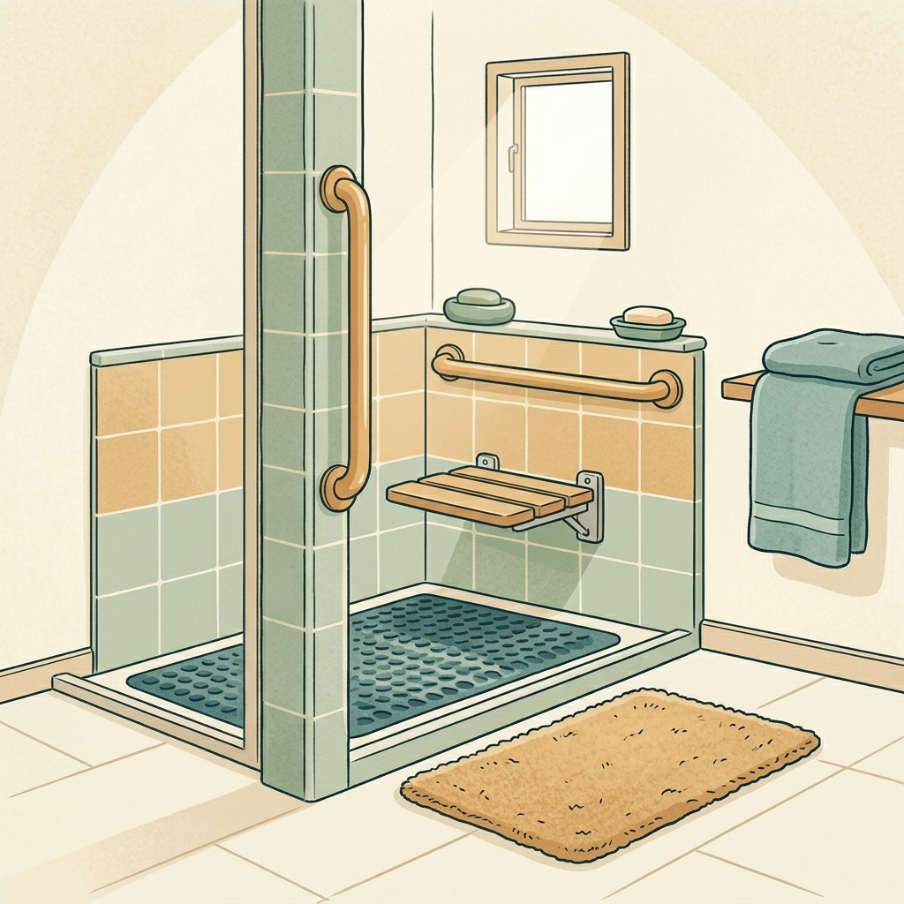
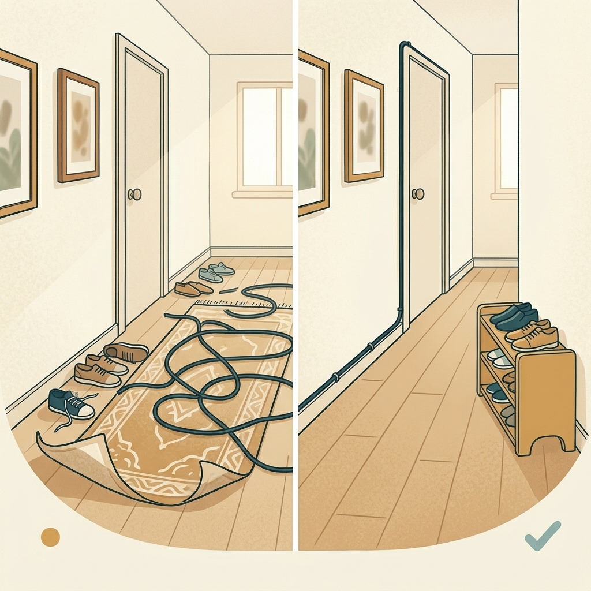
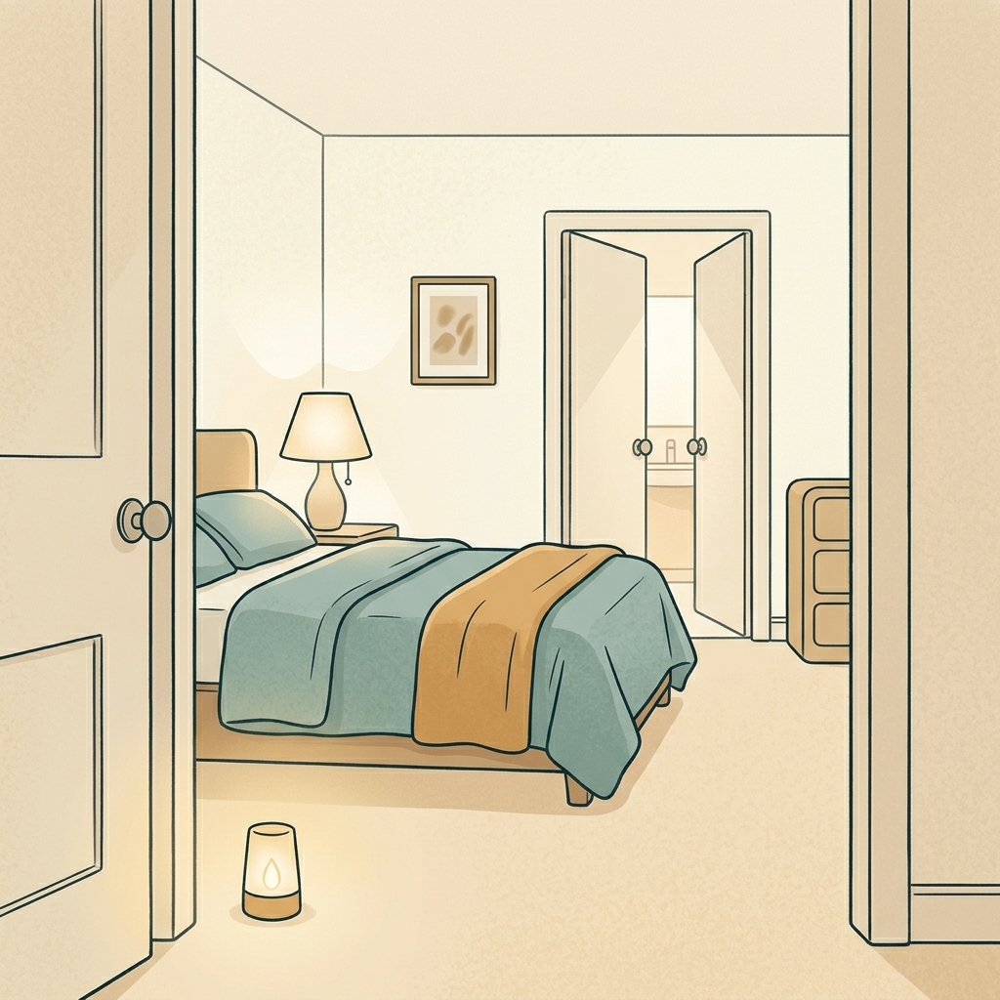
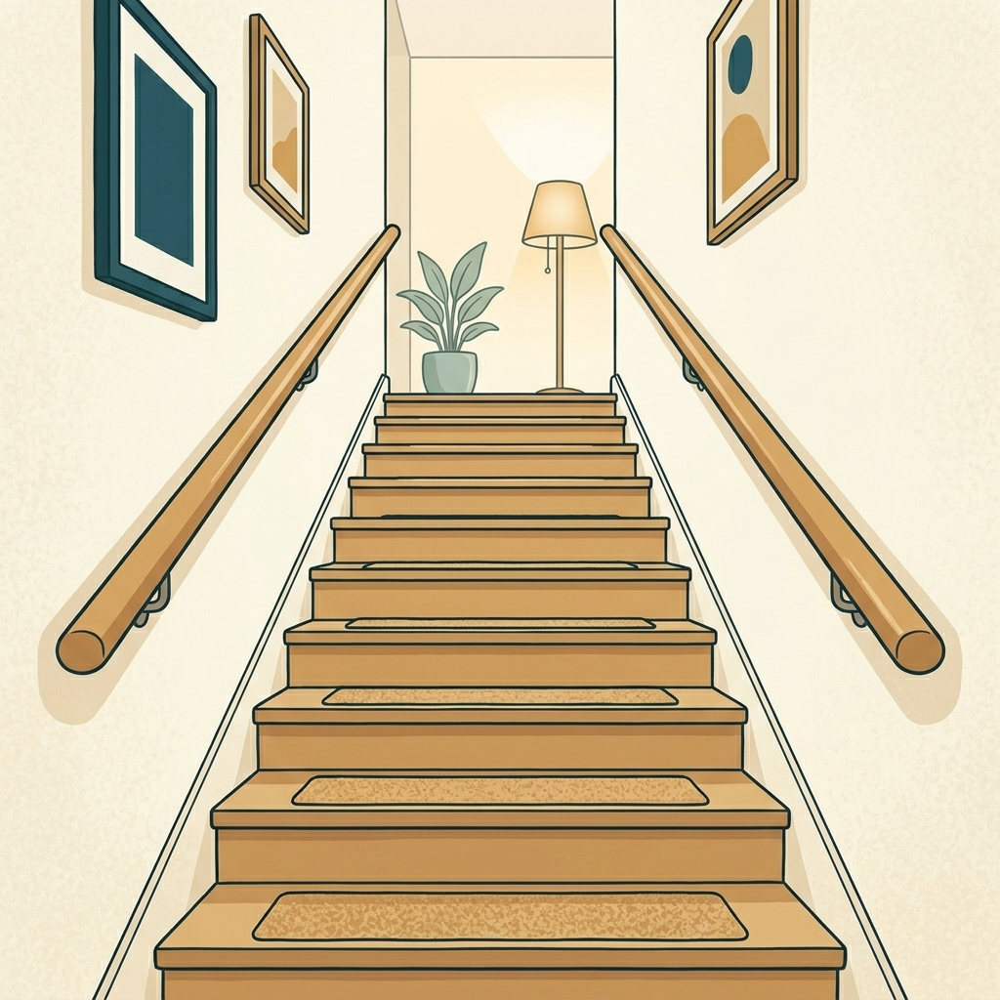
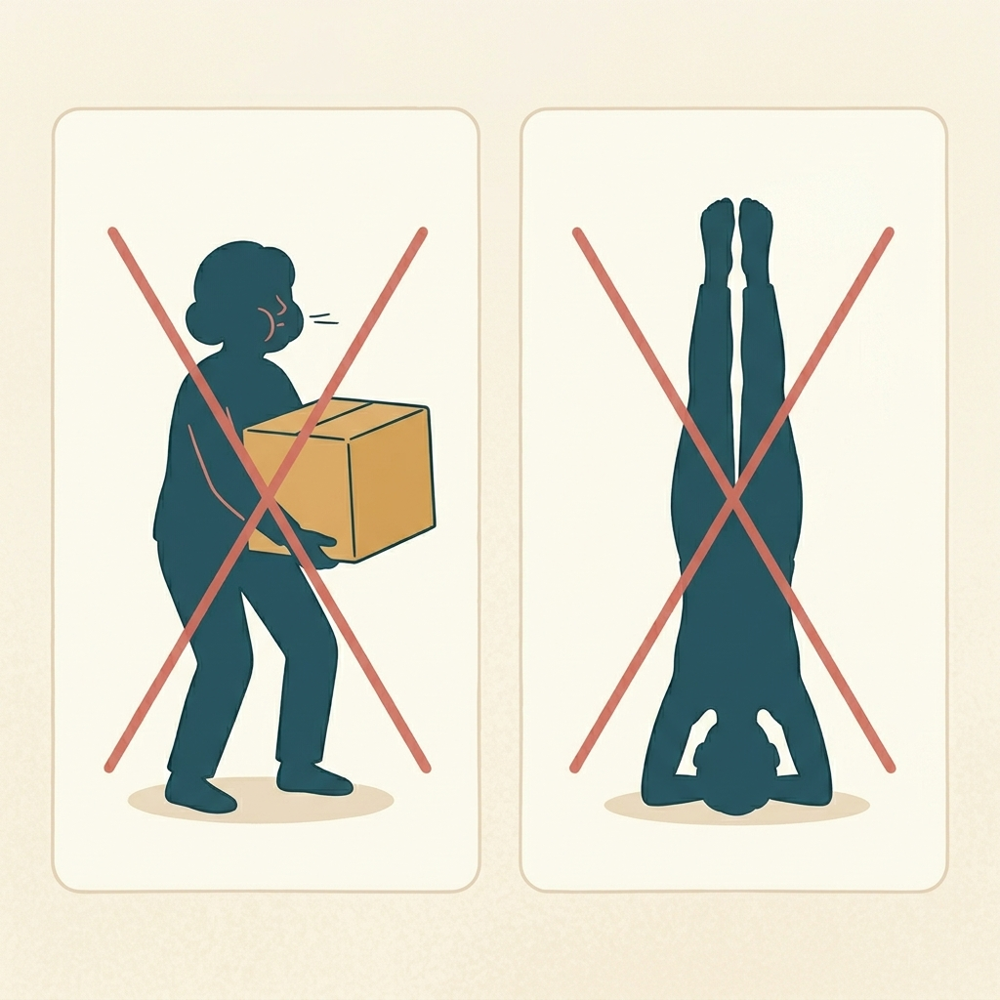
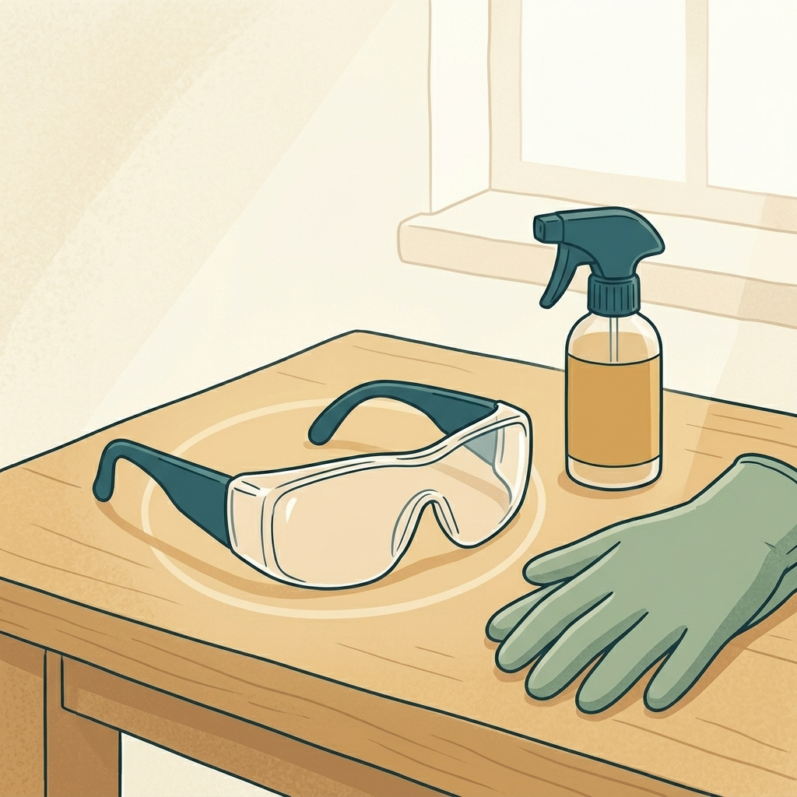

Glaucoma avanzado y enfermedad vascular ocular. Una guía visual para comprender qué se tiene, qué se sugiere y qué alternativas menos invasivas existen — con un modelo 3D del ojo y gráficas.
Este material es educativo y no reemplaza a los médicos tratantes. Sirve para entender la situación y preparar preguntas. Toda decisión se toma con el oftalmólogo. Los estudios citados son generales y no necesariamente aplican igual al caso individual.
Arrastra para girar el ojo. Toca cada concepto para resaltar la estructura y leer una explicación sencilla. Estos son los puntos donde ocurre la enfermedad de tu mamá.
El ojo funciona como una cámara: la luz entra por la córnea y la pupila, atraviesa el cristalino y llega a la retina, que envía la imagen al cerebro por el nervio óptico. El glaucoma daña ese nervio, casi siempre porque la presión dentro del ojo sube cuando el sistema de drenaje falla. Toca los botones de arriba para ver cada parte.
El cuadro combina varios problemas a la vez: glaucoma muy avanzado en ambos ojos (de tipos distintos), una secuela de obstrucción de una vena de la retina en el ojo derecho, y factores generales que afectan la circulación del nervio óptico.
La misma habitación, vista a la vez como la ve una persona sana, como la ve el ojo izquierdo (visión en túnel) y como la ve el ojo derecho (casi sin visión). La cámara hace un paneo lento; arrastra cualquiera de las vistas para mirar alrededor — las tres se mueven en sincronía.
Representación aproximada con fines educativos; la percepción real de cada persona varía.
Carótidas sin placas ni estenosis; velocidades dentro de rangos normales; vertebrales con flujo anterógrado. Descarta enfermedad carotídea como motor del daño isquémico — apoya la hipótesis de que el motor principal del daño vascular es la inestabilidad tensional sistémica y la microcirculación, no una estenosis del cuello.
Variante congénita: la perfusión del territorio posterior (tronco cerebral, cerebelo, occipital) depende casi exclusivamente de la vertebral izquierda. Por sí sola no es peligrosa, pero combinada con microangiopatía + episodios de hipotensión nocturna severa, refuerza la importancia de evitar caídas marcadas de presión arterial (ver §6).
Datos cuantitativos que respaldan los diagnósticos clínicos. El OD tuvo dificultad técnica por opacidad de medios (probable progresión de catarata).
En el OI (ojo útil) el adelgazamiento de la capa de células ganglionares ya está documentado — el daño es estructural, no solo presional. Se realizó además angiografía con fluoresceína del OD el mismo día (12 fases).
Realizado por Cardioib SAS tras la remisión urgente desde oftalmología. Es el dato más reciente y el que más matiza el plan general.
Aproximación visual de cada parámetro contra los rangos clínicos habituales. Los rangos son orientativos — la lectura final siempre la hace el médico tratante, que considera el contexto completo.
Aproximación basada en rangos clínicos generales (AAO, EGS, AASM, AHA, literatura sobre presión de perfusión ocular). No reemplaza la lectura del médico tratante, que considera el contexto individual completo.
Una línea de tiempo de los hitos principales registrados en las historias clínicas de neurología y oftalmología.
Procedimiento ambulatorio, sin cortes, con gotas anestésicas. Busca bajar la presión del ojo útil. Es el siguiente paso clave para proteger la visión que queda.
Cirugía para bajar la presión del ojo derecho. Los médicos advirtieron mal pronóstico visual y riesgo de pérdida brusca de visión. La familia decidió no operarlo, lo cual es razonable.
Krytantek (combinación triple) cada 12 horas y Lumigan en la noche, en ambos ojos. Ya es una terapia casi máxima: por eso se añade el láser y no más gotas.
Exámenes prequirúrgicos, y por neurología, resonancia de órbitas con contraste y anticuerpo AQP4 para descartar otras causas del daño del nervio.
Oftalmología remitió de manera urgente a Medicina Interna para lograr un control más estable de la presión arterial, con el objetivo de disminuir el daño vascular ocular y proteger el ojo izquierdo. El MAPA fue el primer estudio resultante.
No someterse a una cirugía es una opción válida y frecuente, sobre todo cuando un ojo tiene poco potencial de visión y la operación trae riesgos altos. Aquí se explica, en términos generales, qué influye en cuánto tiempo puede pasar sin empeorar — y por qué no operar la válvula no significa no hacer nada.
Cuando un ojo ya ve muy poco (solo movimiento de manos) y la cirugía tiene riesgo de perder de golpe el resto de visión, muchos especialistas y familias eligen priorizar la comodidad y la seguridad sobre intentar recuperar una visión que probablemente no volverá. Es una decisión informada, no un abandono.
El glaucoma suele avanzar despacio, en meses o años, no en días. La velocidad depende sobre todo de la presión del ojo, de qué tan dañado está el nervio (CUP) y de factores generales como la circulación. A más presión y más daño previo, más rápido el deterioro — por eso controlar la presión sigue siendo lo más importante aunque no se opere.
El plan continúa: gotas, láser SLT en el ojo izquierdo y, para el ojo derecho, anti-VEGF y fotocoagulación para mantenerlo cómodo. Si más adelante hay dolor o presión muy alta, existen opciones láser menos invasivas. El objetivo cambia de “recuperar visión” a proteger el ojo bueno y evitar dolor.
En el glaucoma, bajar la presión del ojo retrasa el daño del nervio: en estudios de seguimiento de varios años, reducir la presión disminuyó de forma clara el riesgo de que la enfermedad avanzara, y cada milímetro de mercurio menos cuenta. Por eso, aunque se decida no operar el ojo derecho, mantener la presión controlada —con las gotas y el láser SLT en el ojo izquierdo— es lo que más protege el tiempo de visión útil. No existe un número exacto de “años garantizados”: cada persona avanza distinto, y por eso los controles periódicos sirven para detectar a tiempo si algo cambia.
Toca cada tarjeta para ampliar. La evidencia citada está enlazada en la sección de referencias.
Matiz importante — etiología "mixta" o postraumática: la evidencia del LiGHT corresponde a glaucoma primario de ángulo abierto. En glaucoma postraumático con recesión angular (sospechado en su caso), pequeñas series muestran éxito en torno al 55% de los ojos, mejor cuando la presión basal es alta. Sigue siendo opción razonable y repetible, pero ayuda a calibrar expectativas con el oftalmólogo. Por tratarse de ojo único, vigilancia reforzada del pico de presión en las primeras 24 h post-procedimiento.
En ojo único con CUP avanzado, la seguridad pesa más que la potencia: los MIGS trabeculares (iStent, Hydrus) son los más seguros pero pueden no alcanzar el objetivo de PIO. Los subconjuntivales (XEN, PreserFlo) son más potentes pero conllevan riesgo de hipotonía, algo delicado en ojo único. La decisión depende de la experiencia del cirujano.
Lectura del MAPA: con el mínimo de 66/35 mmHg y PIO OI 23, la presión diastólica de perfusión ocular nocturna cae a ~12 mmHg, muy por debajo del umbral de riesgo (<50 mmHg). La presión basal baja sostenida (80% del tiempo con diastólica <60) ya es un factor de riesgo, no solo los picos.
Qué plantear con cardiología:
Importante: cualquier cambio de horario o dosis debe hacerse con cardiología. Con antecedente de AIT en 2022, el equilibrio entre "no bajar mucho de noche" y "no subir de día" lo decide el médico con el MAPA en mano.
Qué plantear con cardiología: valorar una mesa basculante (head-up tilt test) en la madre — examen ambulatorio, seguro, sin radiación. Si se confirma disautonomía, hay medidas conservadoras (hidratación, sal, medias compresivas, maniobras isométricas) y, eventualmente, farmacológicas (midodrina, fludrocortisona) que deben individualizarse porque conviven con HTA.
Postura conjunta AGS / Academia Americana de Oftalmología (enero 2025): no recomiendan uso rutinario todavía — la dosis necesaria (3 g/día) está muy por encima de las dosis nutricionales habituales y hay riesgo de hepatotoxicidad. Si se considera, debe ser bajo supervisión médica con monitorización de pruebas hepáticas.
Tratamiento etiológico (la causa):
Tratamiento sintomático (presión y dolor):
Sobre aspirina y neovasos: un estudio reciente (2025) sugirió que la aspirina prolongada podría favorecer la neovascularización coroidea vía TSP-1. Es un dato emergente, no concluyente. Si la aspirina está indicada por prevención secundaria (ictus, IAM previos), no se suspende por este hallazgo — pero conviene plantearlo al cardiólogo y al retinólogo.
Diez recomendaciones prácticas ilustradas. Pasa el cursor o toca cada tarjeta para verla con más detalle.










Por tratarse de un ojo único funcional y un caso complejo, pedir una segunda opinión con un especialista en glaucoma es completamente apropiado.
Estudios y fuentes consultadas (información general). Cada enlace abre la fuente original.